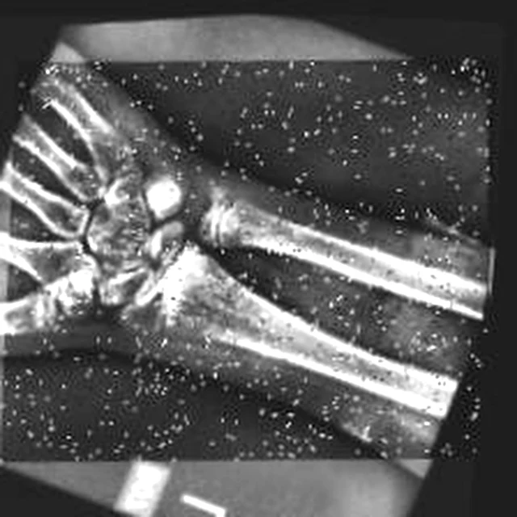
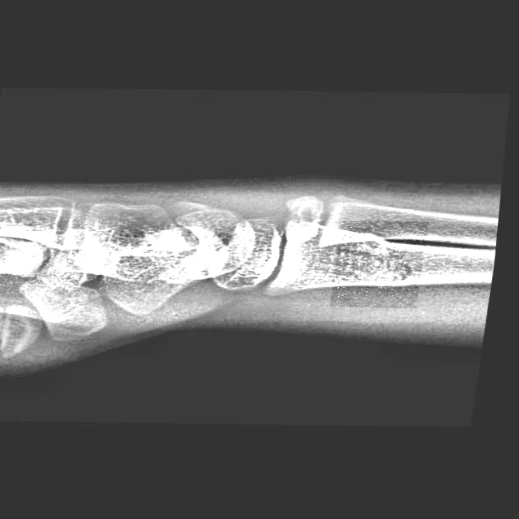

个人资料与受伤信息
AI 驱动的运动骨折智能诊疗与康复决策平台
影像辅助识别 · 专业人员复核 · 康复档案 · 运动回归管理
账号由管理员统一分发，审核结果以机构通知为准
今天也要坚持康复训练
3 个动作 · 约 12 分钟 · 已完成 0/3
复查 X 线 · 请携带既往影像
仅展示医生已复核 / 已签发的影像与报告

左腕 · 桡骨远端
康复中 医生已签发
最近影像 2026-09-24
右踝 · 外踝扭伤（既往）
已结案 医生已签发
结案 2026-01-12
病例 LSY-20260910-008 · 第 3 周 · 活动恢复期
穿衣、进餐等基本自理
腕关节主动屈伸、手指屈伸
握力球、等长收缩，无痛无肿为度
篮球 · 校队 | 左腕康复中
演示账号：管理员 88888888 / 12345678；患者 13800000910 / 验证码 1234；医护 doctor、rehab / 12345678。被停用账号将无法登录。
您 09-24 的复查影像报告已由执业医师签发，点击查看。
康复治疗师更新了第 3–4 周计划，本周加入握力球训练。
2026-10-08（周四）09:00 复查 X 线，请携带既往影像资料。
您连续两次疼痛评分偏高，建议暂停训练并联系治疗师。
距复查还有 20 天
复查用于评估骨折愈合情况，由执业医师确认后决定是否进入下一康复阶段，请勿自行提前负重训练。

影像与标注为辅助参考，最终以执业医师意见为准
执业医师 杨同学 · 签发于 2026-09-24
左腕 X 线正位示：桡骨远端骨皮质连续性中断，未见明显移位；复查片骨折线模糊，周围可见骨痂形成，周围软组织肿胀较前消退。
左腕桡骨远端骨折（闭合性），复查示愈合中。
本报告由执业医师复核签发，AI 内容仅作辅助参考，不构成医疗诊断或回归运动依据。
维持前臂与手部肌力，促进消肿与血液循环。
以“无痛、不肿”为度，训练后可冰敷 10–15 分钟。
跟随示范缓慢活动，幅度以无痛为限
3 组 × 15 次
3 组 × 15 次
3 组 × 20 次
完成今日训练，请如实反馈身体反应，数据将回传给康复治疗师用于调整方案。
综合恢复度由复评与日常自评数据计算，仅供参考；达到 90 分且经执业医师评估通过后，方可回归训练，最终以医生评估为准。
生活基本自理、静止无痛 · 已通过
腕关节活动度达健侧 60% · 已通过
准入：握力达健侧 70%、训练无痛无肿 · 当前
待解锁：力量达健侧 80%、心肺适应良好
待解锁：跑跳无不适、平衡与本体感觉达标
高风险，须执业医师确认后解锁
待解锁：恢复度 ≥ 90，治疗师与教练共同评估
逐级通过、不可跳级；系统仅记录与提醒，不会自动批准回归，每一级均由医生 / 治疗师评估后解锁。
桡骨远端骨皮质连续性中断
VAS 6 · 肿胀明显 · 石膏保护性固定
手指屈伸、肩关节活动度、冰敷消肿
骨折线模糊、可见骨痂，损伤区域缩小约 31%
VAS 2 · 肿胀消退 · 拆除石膏
腕关节活动度 30° → 65°，加入握力球训练
评估愈合情况，决定是否进入力量回归期
运动创伤 / 康复科
工作时间：周一至周五 08:30–17:30
执业医师 · 影像复核与报告签发
康复治疗师 · 康复方案制定与复评
AI 驱动的运动骨折智能诊疗与康复决策平台
影像预处理与质检、疑似骨折提示、结构化报告复核留痕
经授权查看损伤摘要、康复进度与禁忌动作，跟踪回归训练
本 App：复诊提醒、训练打卡、疼痛自评与阶段注意事项
以上为竞赛演示口径数据，用于展示平台能力，不代表实际经营业绩。
多尺度特征提取 + 注意力机制强化细小骨折线识别，以边界框 / 热力图 / 轮廓标记疑似区域并输出置信度，只作"疑似提示"，不使用"确诊 / 排除"等确定性表述。
融合影像、病历与随访数据，自动生成结构化报告；历次影像动态对比，量化愈合与功能恢复进展；专业人员可确认、修改、驳回，差异回流用于模型优化。
按周阶段生成训练动作、禁忌动作与复评节点；康复档案记录疼痛、活动度、肌力与训练完成情况；通过回归阶梯逐步恢复运动，回归须由专业人员判定。
上传 · 质检
框 / 热力图
医生确认
结构化记录
专业判定
AI 承担影像预处理、疑似区域提示与信息整理；最终诊断、报告签发、康复方案确认与运动回归判定，始终由执业医师、康复治疗师等专业人员完成。
本应用为全国大学生数字媒体科技作品及创意竞赛参赛作品，页面内容为演示数据；AI 结果仅供辅助参考，不构成医疗诊断，最终诊疗与康复安排以执业医师意见为准。
医护端仅展示经患者授权的损伤摘要与影像；原始病历与影像不出机构。影像复核结果由医师签发后才会同步至患者端。